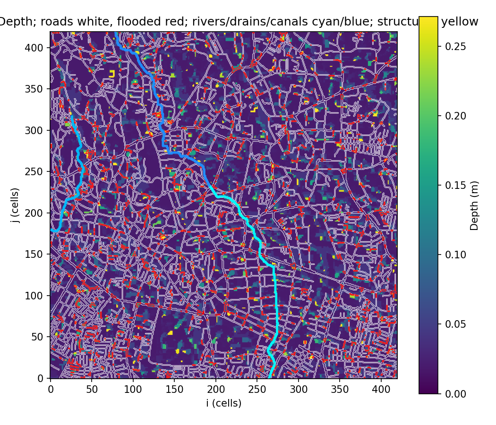
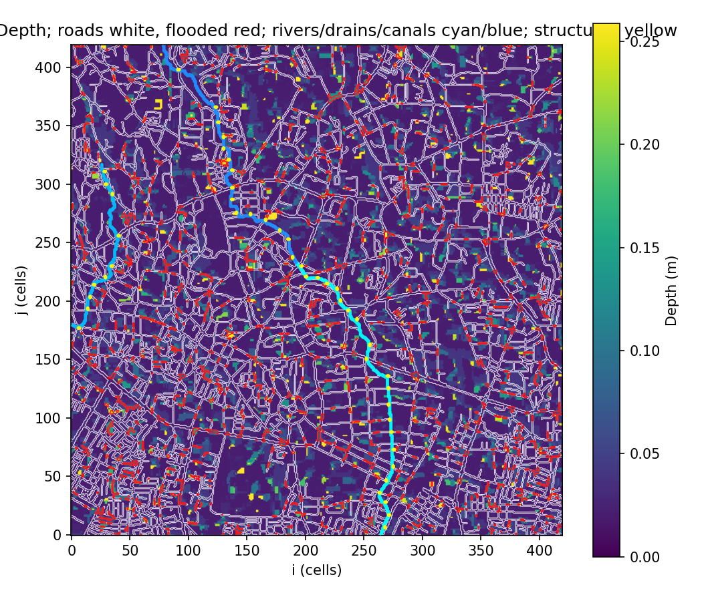
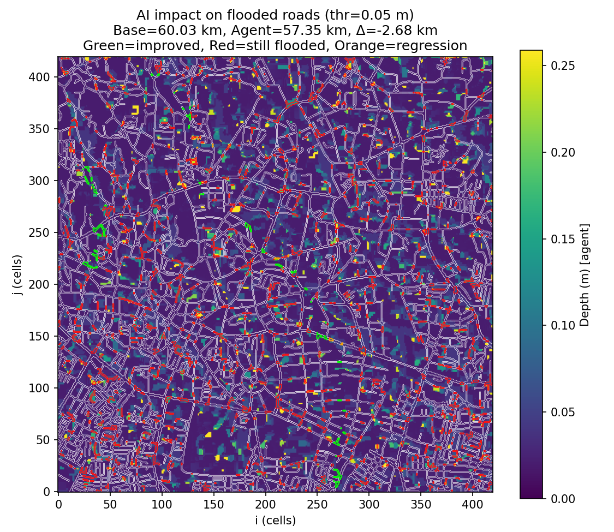
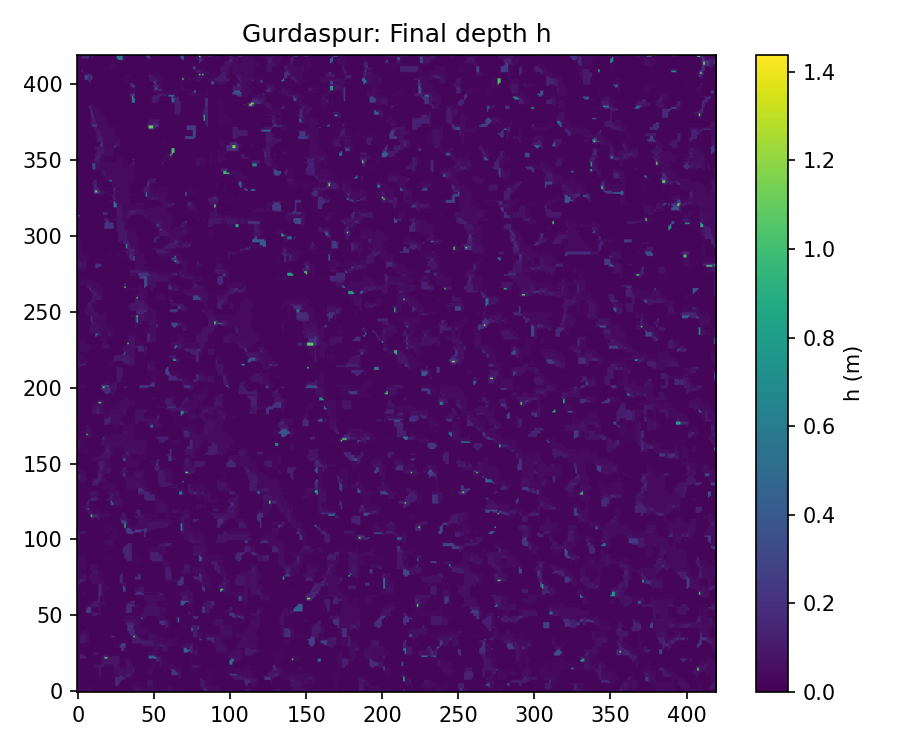
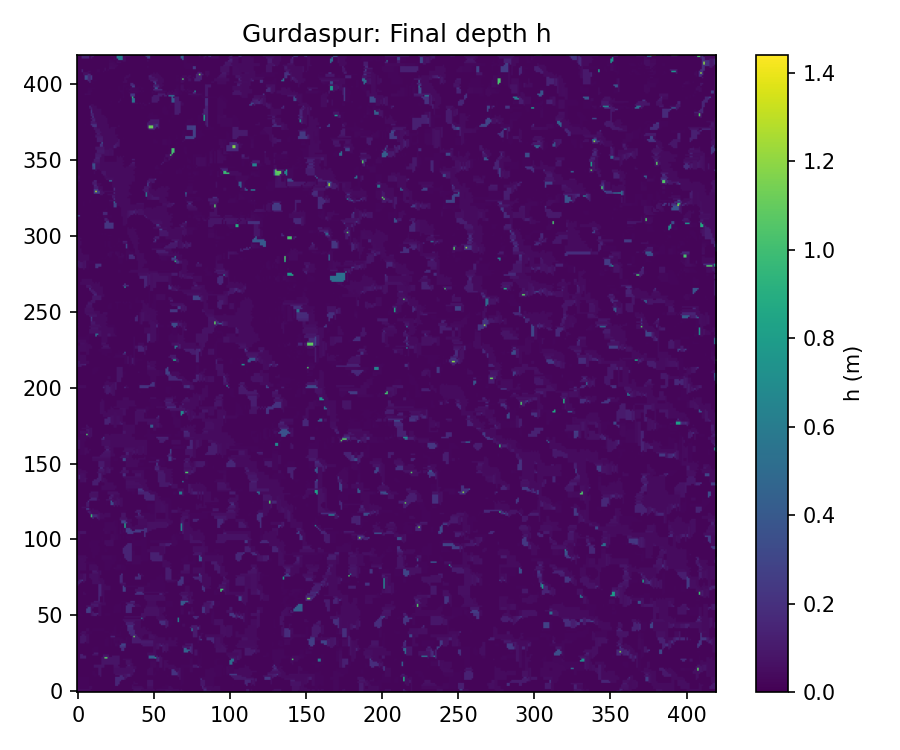

Baseline flooded roads (≥0.05 m): 60.029 km
Agent design: 57.351 km
Improvement: 4.5%





### Pilot checklist (what you need)
- Objectives/KPIs
- Define AOIs (Dehradun/Jabalpur), target roads/POIs, KPI thresholds (e.g., roads < 5 cm, duration < 30 min), budget caps.
- Data (per city; prefer district-wide cached, then clip)
- DEM: 1–5 m if available (LiDAR/CartoDEM v3.1 min). Hydro‑enforced if possible.
- LULC: ≥10 m (Sentinel, ESRI, or state GIS).
- Hydrology: rain gauges/IMD gridded rain; river stage/discharge hydrographs (WRD/IMD/NIH/CEEW partners).
- Networks: OSM rivers/drains/canals/roads; municipal drain maps if available.
- Structures: bridges/culverts (as‑built if possible); storm outfalls; siphons.
- Ground truth: flood marks, photos, prior studies, damage logs.
- Permissions & governance
- Data licenses/MOUs, NDA with agency; right to publish pilot results; point of contact for validation.
- Compute & environment
- One CPU box (8–16 cores, 32–64 GB RAM), 50–200 GB disk.
- Pinned env (requirements.txt), fixed PROJ/GDAL install; one‑command runner.
- Workflow setup
- Cache regional datasets; AOI clipper.
- Baseline DW‑FV run at 50 m (screening), hot‑spot tiles at 10–20 m.
- Crossings‑only culverts with cost; bridges/weirs; spatial Manning from LULC.
- KPIs: flooded road km by class, POI access, depth/area, duration.
- Exports: KMZs, contour KMLs, PNG panels, KPI CSVs.
- Calibration/validation
- Pick 1–2 historical events with gauges/marks.
- Calibrate roughness/infiltration and channel n; verify mass balance; compare depths/stages/RMSE.
- SLM integration (optional but useful)
- Objective parsing → KPI targets/budget; design proposals from crossing candidates; compliance checks; stakeholder narration.
- Deliverables
- Baseline vs “selected” design KMZs, hotspot overlays, contour KMLs.
- KPI tables (by road class/ward), budget and cost summary.
- Short report (method, assumptions, calibration, benefits, next steps).
- Live demo deck (2–3 slides per AOI).
- Timeline (typical)
- Week 1: data + setup + first baseline.
- Week 2: calibration + KPIs.
- Week 3: agent designs + iterate with stakeholders.
- Week 4: high‑res hotspots + final package/demo.
- Risks to de‑risk early
- DEM quality/hydro‑enforcement, missing structures, boundary hydrographs, CRS mismatches.